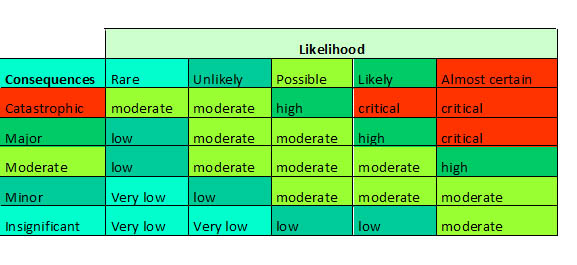

What is risk assessment?Risk Score CalculatorCompleting a risk assessment allows you to determine how dangerous or immediate the risk is, and will help you prioritise hazards based on their risk before implementing controls, enabling you to work on the highest risk first. As long as the risk assessment tools you use takes into account the likelihood, the possible severity or any illness or injury that may result from the hazard and you use the same tool consistently, you can be comfortable that it is appropriate. Some risk tools also include the exposure to the hazard. Below are some examples of the different types of tools available. Risk MatrixThe risk matrix works by using the matrix with your scenario or hazard looking at how severely it could hurt someone and then how likely is it to occur.The below example is consisting of a 6 by 6 matrix with a 1 to 5 priority. Rating MatrixThis topic is covered in much greater depth. Click here if you want to access this website |